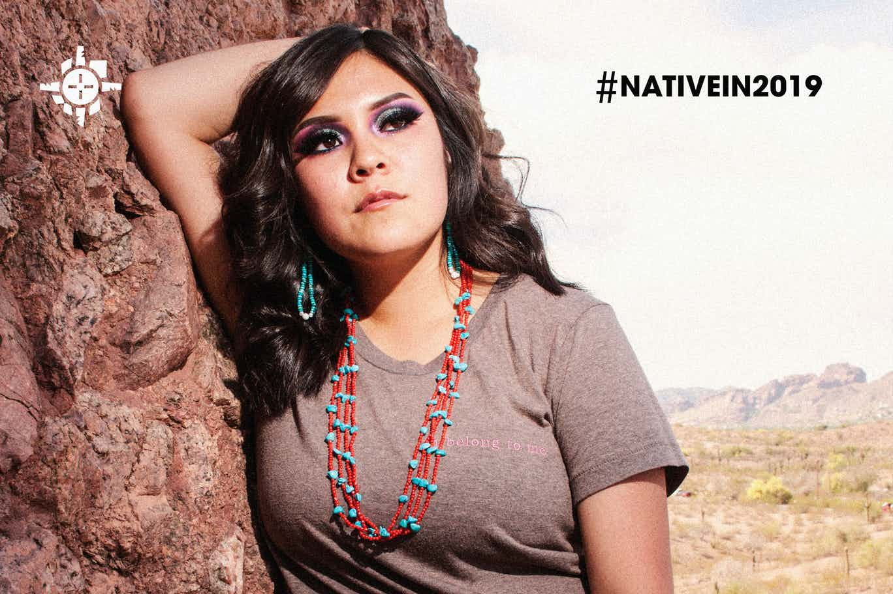
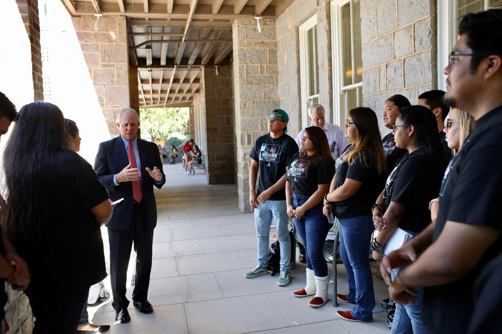
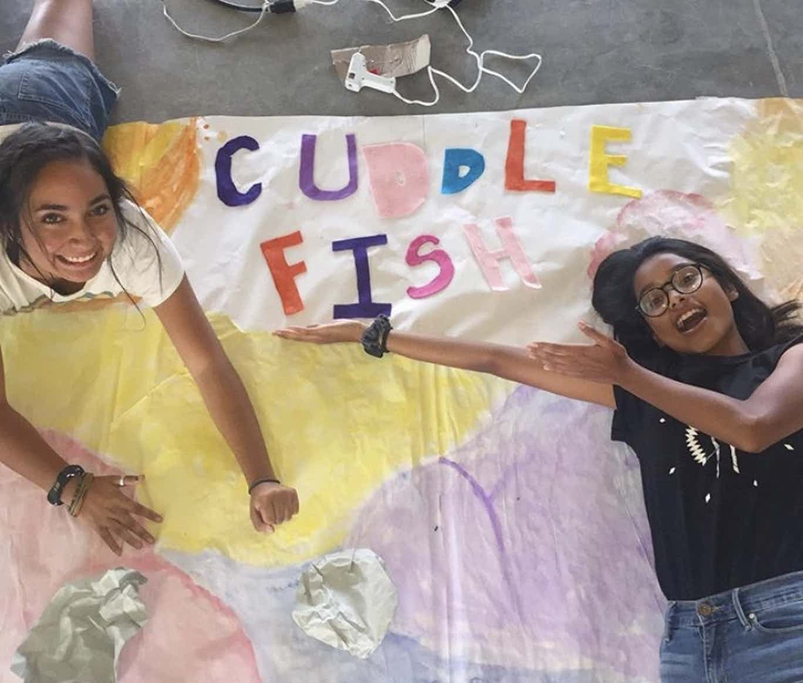

Tiffany Black, Diné, is a makeup artist and beauty influencer. She has received recognition from major brands including Anastasia Beverly Hills, Morphe and Kylie Skin.

Seventeen students were gathered on an October afternoon at the Old Main building of the University of Arizona. They were writing letters and participating in a photoshoot for their Native SOAR class.
Reyna Banteah leases a plot of land from the city of Albuquerque where she grows kale, carrots, radishes and onions.
Lynette Stant makes learning fun— and that’s the word from her students. Now the state of Arizona knows, too. On Thursday Stant, accepted the award for 2020 Arizona Teacher of the Year.
Tribal leaders are meeting at the annual conference of the National Congress of American Indians in Albuquerque, New Mexico.

Mato means bear in Lakota. This image was the basis for a hip-hop music video created by Native youth at Pine Ridge this summer.